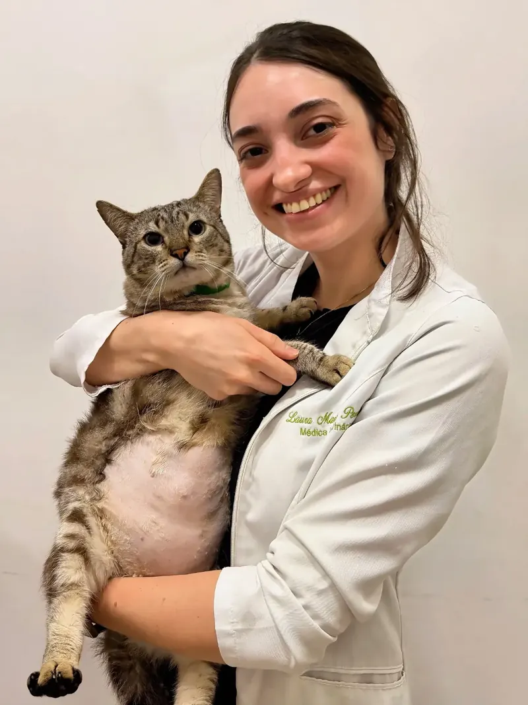
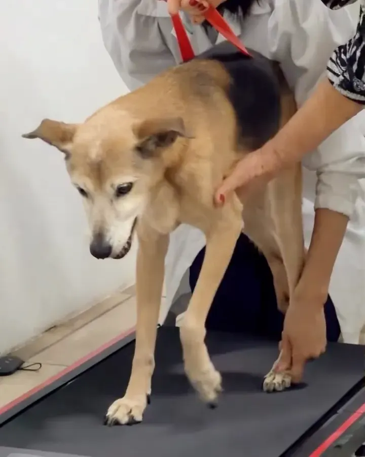
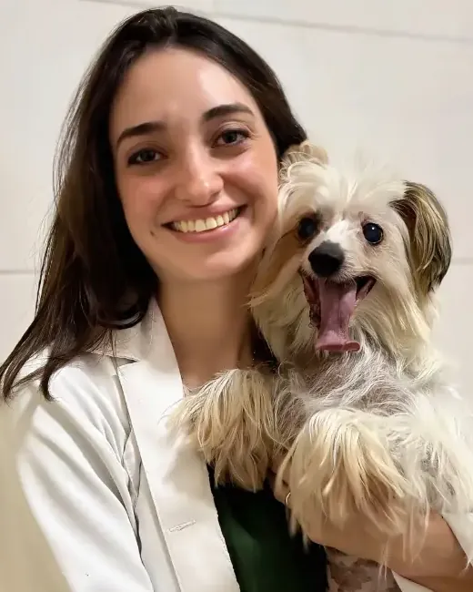
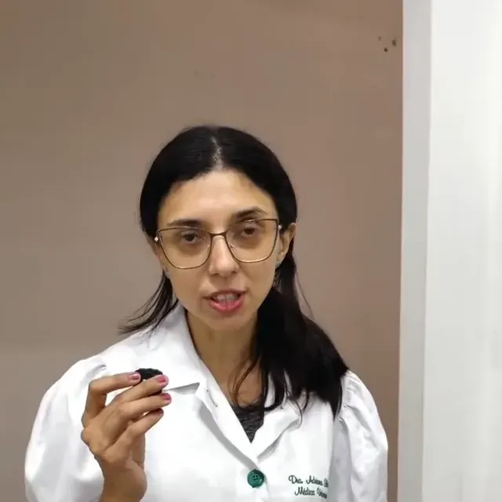
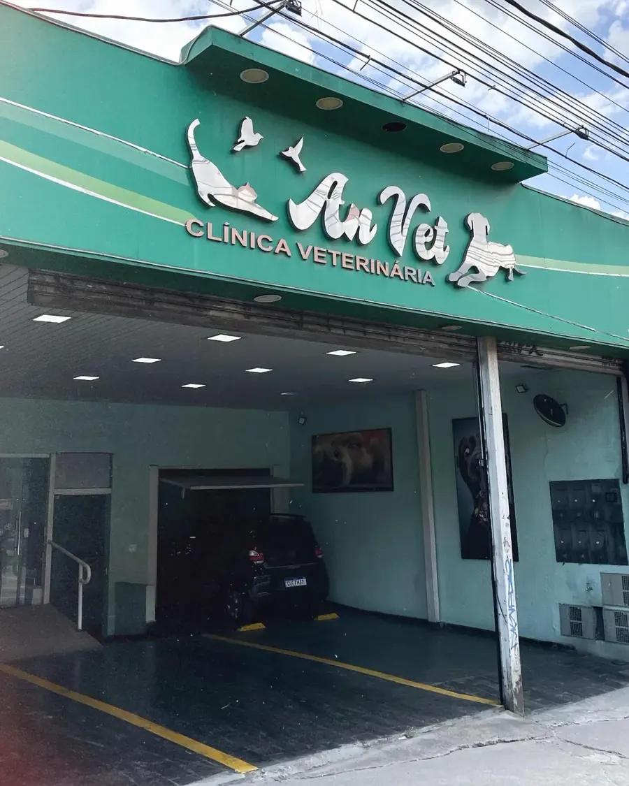

Consultas e prevenção
Para examinar, tirar dúvidas e acompanhar cada fase da vida, de filhote a idoso.
- Consultas clínicas
- Vacinas
- Microchipagem
- Orientação nutricional
- Animais silvestres, com agendamento
A Clínica Veterinária Anvet atende cães e gatos há mais de 25 anos, sem agendamento e com preço popular.
Segunda a sábado, das 9h às 18h
Av. Dona Belmira Marin, 1801, GrajaúVer como chegar
Uma única unidade, de segunda a sábado, das 9h às 18h. Para a consulta, é só chegar. Alguns serviços pedem combinação antes.
Sem hora marcada: chegue no horário de atendimento e a recepção encaminha seu pet.
Sem agendamentoAceito desde outubro de 2026, com a mesma regra da consulta. Leve os dados do plano.
Sem agendamentoLeva o pet e o tutor juntos até a clínica. Peça pelo WhatsApp com antecedência e aguarde a confirmação do horário.
Com agendamentoComeçam por uma avaliação, marcada na recepção ou pelo WhatsApp.
Com agendamentoConsulta, exames de imagem, cirurgia e reabilitação no mesmo endereço, sem levar seu pet a outro lugar.
Perguntar sobre valores ou preparoPara examinar, tirar dúvidas e acompanhar cada fase da vida, de filhote a idoso.
Feitos na própria clínica, com laudo no caso do raio-X.
Da castração às cirurgias ortopédicas, em cães e gatos.
Para a recuperação e o tratamento em casa.
Sala de consulta, centro cirúrgico, raio-X, laboratório, farmácia, fisioterapia e o táxi dog da clínica.


Em março de 2026, a Anvet apresentou um time de quatro médicas veterinárias. Duas delas aparecem com frequência nos vídeos da clínica.

Médica veterinária
Cresceu acompanhando a mãe, também veterinária da Anvet. Em janeiro de 2025, completava cinco anos na clínica.

Médica veterinária, acupuntura
Conduz as sessões e avaliações de acupuntura da clínica, que aparecem nos destaques da Anvet desde 2023.
A Anvet trabalha com preço popular. Os valores de consultas, vacinas e exames são informados na recepção ou pelo WhatsApp.
Não. O atendimento é de segunda a sábado, das 9h às 18h. Fora desse horário, em caso de emergência, procure um hospital veterinário 24 horas.
Cães e gatos, sem agendamento. Desde janeiro de 2026 a clínica também atende animais silvestres; nesse caso, agende a consulta pelo WhatsApp antes de vir.
A clínica divulga apenas o Petlove. Para outro plano, confirme pelo WhatsApp antes de vir.
Envie pelo WhatsApp seu endereço, o nome do pet e o horário em que precisa. O pedido só vale depois que a equipe confirmar a disponibilidade.
Depende do feriado. Os avisos de horário são publicados no Instagram @_anvet. No feriado de 12 de outubro, por exemplo, a clínica ficou fechada.

Av. Dona Belmira Marin, 1801
Parque Brasil, região do Grajaú
São Paulo, SP · CEP 04846-010
Preencha e o site monta a mensagem para você enviar pelo WhatsApp. Nada é enviado daqui. Pedidos de táxi dog ou de avaliação só valem depois que a equipe confirmar o horário.